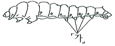
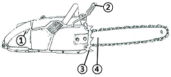

산림기능사 (2010-03-28 기출문제)
1과목: 조림 및 육림기술
1. 동령림과 이령림의 차이점에 대한 설명 중에서 동령림의 특징에 해당되는 것은?
- 풍해가 매우 적다.
- 갱신이 짧은 시간 내에 이루어진다.
- 임상유기물이 지속적으로 축적된다.
- 동령림 내 작은 나무들이 장차 유용임목으로 된다.
(정답률: 68%)

2. 묘목의 활착률이 가장 좋은 것은?
- T/R율이 3이다.
- T/R율이 5이다.
- T/R율이 8이다.
- T/R율이 10이다.
(정답률: 89%)
3. 나무가 토양용액에 녹아 있는 무기양분을 주로 흡수하는 곳은?
- 잎
- 뿌리
- 부름켜
- 줄기
(정답률: 95%)
4. 갱신을 위한 벌채 방식이 아닌 것은?
- 개벌작업
- 산벌작업
- 택벌작업
- 간벌작업
(정답률: 67%)
5. 모수작업은 전 재적의 약 몇 %의 나무를 베는가?
- 60%
- 70%
- 80%
- 90%
(정답률: 73%)
6. 채종 직후 노천매장 하는 종자가 아닌 것은?
- 소나무, 해송
- 단풍나무, 들메나무
- 잣나무, 은행나무
- 호두나무, 가래나무
(정답률: 62%)
7. 토양 성질의 진단과 관련된 내용으로 틀린 것은?
- 산정은 건조하고 척박하다.
- 북향과 동향사면은 건조한 경우가 많다.
- 비옥한 토양일수록 자라고 있는 식물의 종류가 많다.
- 산지에 자라고 있는 식물의 종류가 적을수록 척박하다.
(정답률: 66%)
8. 대상택벌작업(帶狀擇伐作業)에서 벌채연구(伐採列區)를 한 바퀴 돌아서 벌채하는 기간은?
- 윤벌기
- 회귀년
- 갱신기간
- 갱정기
(정답률: 85%)
9. 다음 침엽수 중 잎 속에 1개의 관다발을 가진 것은?
- 해송
- 소나무
- 리기다소나무
- 잣나무
(정답률: 60%)
10. 침엽수의 가지를 제거하는 방법으로 가장 옳은 것은?
- 가지밑살의 끝부분에서 자른다.
- 가지가 뻗은 방향에 직각되게 자른다.
- 수간에 오목한 자국이 생기게 자른다.
- 수간에 바짝 붙여 수간축에 평행하도록 자른다.
(정답률: 87%)
11. 토양을 형성하는 암석 중 화성암에 속하지 않는 것은?
- 화강암
- 편마암
- 석영반암
- 현무암
(정답률: 63%)
12. 파종상에서 1년, 두 번 이식하여 각각 1년씩 보낸 3년생 묘목의 묘령은?
- 1 - 1 - 1
- 2 - 1
- 1 - 2
- 3 - 0
(정답률: 91%)
13. 다음 중 좋은 묘목의 조건은?
- 뿌리의 발달은 적지만, 키가 큰 것
- 직근이 발달하고 가지가 굵은 묘일 것
- 직근(直根)이 발달하고 측근(側根)이 적은 것
- 지상부와 지하부가 균형 있게 발달되고 T/R율이 작을 것
(정답률: 89%)
14. 간벌의 효과에 대한 설명으로 틀린 것은?
- 지름생장을 촉진하고 숲을 건전하게 만든다.
- 빽빽한 밀도로 경쟁을 촉진시켜 나무의 형질을 좋게 한다.
- 벌채가 되기 전에 나무를 솎아베어 중간 수입을 얻을 수 있다.
- 나무를 솎아 벤 곳에 잡초가 무성하게 되어 표토의 유실을 막고 빗물을 오래 머무르게 하여 숲땅이 비옥해진다.
(정답률: 86%)
15. 소나무 종자의 효율을 70%, 1g당의 종자립수를 100, 가을이 되어 1m2 에 남길 묘목의 수를 500 그루, 잔존률을 0.3으로 할 때 m2 당 파종량(g)은?
- 23.8g
- 25.8g
- 28.8g
- 30.8g
(정답률: 47%)
16. 파종상의 해가림 시설을 제거하는 가장 적절한 시기는?
- 5월 중순 ~ 6월 중순
- 7월 하순 ~ 8월 중순
- 9월 중순 ~ 10월 상순
- 10월 중순 ~ 11월 중순
(정답률: 81%)
17. 수중 중에서 결실주기가 5~7년인 수종은?
- 소나무
- 낙엽송
- 상수리나무
- 리기다소나무
(정답률: 69%)
18. 크고 작은 나무들이 홍생 되어 있는 복층림으로 이루어진 임상에서 성숙한 임목을 국소적으로 잘라 벌채하는 작업방법은?
- 개벌작업
- 모수작업
- 산벌작업
- 택벌작업
(정답률: 79%)
19. 모수작업으로 임목벌채를 시행할 때 모수의 조건으로 틀린 것은?
- 음수 수종일 것
- 바람의 저항이 강할 것
- 결실 연령에 도달할 것
- 유전적 형질이 좋은 나무일 것
(정답률: 84%)
20. 삽수 발근에 큰 영향을 끼치는 주요 원인이 아닌 것은?
- 모수의 연령
- 수종의 유전성
- 삽수의 양분 조건
- 모수의 생육환경 조건
(정답률: 55%)
21. 채집된 종자를 건조시킬 때 음지 건조를 시켜야 하는 수목종자로 바르게 짝지어진 것은?
- 소나무류, 해송
- 낙엽송, 전나무
- 참나무류, 편백
- 회양목, 소나무류
(정답률: 55%)
22. 제벌을 설명한 것 중 틀린 것은?
- 조림자의 경우 쓸모없는 침입수종을 제거한다.
- 임분전체의 형질을 향상시키는데 목적이 있다.
- 조림목이 임관을 형성한 뒤부터 간벌한 시기에 이르는 사이에 실시한다.
- 임상을 정비하여 불량목과 불량품종을 다 제거 하여 간벌작업이 필요 없게 된다.
(정답률: 69%)
23. 종자의 정선법 중 풍구, 키, 선풍기 또는 종자풍선 용으로 만든 동력식 장치 등으로 종자에 섞여있는 종자날개, 잡물, 쭉정이 등을 선별하는 방법은?
- 입선법
- 사선법
- 풍선법
- 액체선법
(정답률: 88%)
24. 바다에서 불어오는 바람을 막기 위해 방조림을 만드는데 적합하지 않는 수종은?
- 해송
- 동백나무
- 사철나무
- 느티나무
(정답률: 70%)
25. 우량한 종자의 채집을 목적으로 지정한 숲은?
- 산지림
- 채종림
- 종자림
- 우량림
(정답률: 88%)
2과목: 산림보호
26. “송충이”라고도 불리며, 5령 유충으로 월동을 하여 이듬해 4월경부터 잎을 갉아먹는 해충은?
- 솔나방
- 소나무좀
- 솔잎혹파리
- 솔껍질깍지벌레
(정답률: 84%)
27. 유충과 성충 모두가 나무 잎을 식해하는 해충은?
- 참나무재주나방
- 솔나방
- 어스렝이나방
- 오리나무잎벌레
(정답률: 78%)
28. 새로 나온 가지에 피해를 주며 가지 끝이 밑으로 꼬부라져 농갈색 갈고리 모양으로 되어 낙엽이 되는 병은?
- 향나무 녹병
- 잣나무 털녹병
- 낙엽송 가지끝마름병
- 붉나무 빗자루병
(정답률: 79%)
29. 토양 중에 서식하는 균류에 의하여 전염되는 병은?
- 소나무 잎녹병
- 모잘록병
- 오동나무 빗자루병
- 뽕나무 오갈병
(정답률: 79%)
30. 나무의 병원체 중 바이러스에 의한 병은 병원체가 나무의 전신으로 퍼져서 심한 피해를 주고 있다. 다음의 병해 중 바이러스에 의한 병은?
- 포플러 모자이크병
- 벚나무 빗자루병
- 대추나무 빗자루병
- 오동나무 빗자루병
(정답률: 84%)
31. 다음 중 잎을 가해하지 않는 해충은?
- 솔나방
- 소나무좀
- 미국흰불나방
- 오리나무잎벌레
(정답률: 82%)
32. 현재 우리나라에서 유통되는 대부분 농약의 토양 반감기간은?
- 100일 미만
- 100일 이상~180일 미만
- 180일 이상~360일 미만
- 360일 이상
(정답률: 63%)
33. 소나무 잎녹병에 있어서 여름포자(하포자)의 중간 숙주가 되는 것은?
- 황벽나무
- 잎갈나무
- 까치밥나무
- 참나무류
(정답률: 65%)
34. 다음 나비목 유충의 모식도에서 『가』의 명칭은?

- 머리
- 다리
- 복지
- 기문
(정답률: 70%)
35. 농약에서 보조제를 쓰는 목적과 거리가 먼 것은?
- 협력제는 유효성분의 효력을 증진시킨다.
- 전착제는 주제(主劑)의 전착력(展着力)을 좋게 한다.
- 계면활성제는 유제의 유화성을 높이는데 쓰인다.
- 증량제는 분제에 있어서 유효성분의 농도를 높이기 위해 쓴다.
(정답률: 75%)
36. 환경요인은 수목법을 발생시키는 요인으로서 중요 하게 작용한다. 환경요인과 병을 연결한 것으로 틀린 것은?
- 강풍 - 잣나무 잎떨림병
- 상처 - 밤나무 줄기마름병
- 대기오염 - 소나무 그을음잎마름병
- 산불, 모닥불 - 리지나뿌리썩음병
(정답률: 59%)
37. 살충기작에 의한 살충제의 분류 방법 중 나프탈렌, 크레오소트 등이 속하는 것은?
- 소화중독제
- 기피제
- 화학불임제
- 침투성살충제
(정답률: 73%)
38. 잣나무 털녹병의 중간기주로 병의 예방을 위해서 잣나무부근에 식재를 피해야 할 수종은?
- 소나무
- 비자나무
- 참중나무
- 까치밥나무
(정답률: 72%)
39. 소나무와 곰솔의 새잎에 벌레혹(벌레혹)을 만들어 피해를 주는 해충은?
- 솔나방
- 솔잎혹파리
- 소나무좀
- 소나무재선충
(정답률: 82%)
40. 경사가 급하고 구름지가 많은 지형에서 연소방향 반대사면의 어느 곳이 불을 끌 수 있는 가장 좋은 장소인가?
- 8~9부 능선
- 5부 증선
- 산복부 부근
- 계곡 부근
(정답률: 62%)
3과목: 임업기계일반
41. 기계톱의 오일을 급유하는 과정에서 묽은 윤활유를 사용하게 되었을 때 나타나는 가장 주된 현상은?
- 체인이 작동되지 않는다.
- 가이드바의 마모가 빨리된다.
- 엔진의 내부가 쉽게 마모된다.
- 엔진이 과열되어 화재 위험이 높다.
(정답률: 63%)
42. 산림작업도구인 각식재용 양날괭이에 대한 설명으로 틀린 것은?
- 형태에 따라 타원형과 네모형이 있다.
- 도끼날 부분은 질긴 뿌리를 자르는 것으로만 사용한다.
- 타원형은 자갈이 섞이고 지중에 뿌리가 있는 곳에서 사용한다.
- 네모형은 땅이 무르고 자갈이 없으며 잡초가 많은 곳에 사용한다.
(정답률: 74%)
43. 냉각되어 있는 기계톱을 시동하려고 한다. 엔진에 시동이 걸렸다가 곧 꺼져버렸다면 어떻게 하여야 되는가?
- 초크를 닫는다.
- 기화기의 온도를 상승시킨다.
- 기화기에 연료공급량을 차단한다.
- 초크를 열고 시동 손잡이를 다시 한 번 잡아당긴다.
(정답률: 70%)
44. 다음 그림은 기계톱의 각 부분의 구조이다. 번호 ④의 지레발톱에 대한 설명이 올바른 것은?

- 악셀레버의 차단기이다.
- 기계톱을 조종하는 앞손잡이이다.
- 나무를 절삭하며, 보통 안전용 제인덮개로 보호한다.
- 정확히 작업을 할 수 있도록 지지역할 및 완충과 받침대 역할을 한다.
(정답률: 84%)
45. 다음 중 용도가 같은 도구만으로 바르게 구성된 것은?
- 스위스 보육낫, 손도끼
- 재래식 낫, 가지치기 톱
- 손도끼, 무육용 이리톱
- 고지절단용 가지치기톱, 소형손톱
(정답률: 70%)
46. 임업기계의 분류에서 조림 및 육림기계가 아닌 것은?
- 예불기
- 지타기
- 식혈기
- 프로세서
(정답률: 48%)
47. 산림작업에서 벌채 및 반출공정에 해당되지 않은 것은?
- 가공공정
- 운반공정
- 정체공정
- 표준공정
(정답률: 48%)
48. 기계톱을 장기 보관 시 주의사항 중 틀린 것은?
- 연료와 오일을 가득 채워둔다.
- 건조한 방에 먼저를 받지 않도록 보관한다.
- 연간 1회씩 전문적 검사관에 의해 검사를 받는다.
- 특수오일로 엔진내부를 보호해주거나 매월 10분씩 가동시켜 준다.
(정답률: 86%)
49. 기계톱의 주간정비 항목 중 점화부분의 정비사항 으로 틀린 것은?
- 스파크플러그의 정비
- 연료통과 연료필터 청소
- 스파크플러그의 외부 점검
- 점화상태의 점검결과에 따른 플러그 교환
(정답률: 64%)
50. 안전장비와 그 주요기능에 대한 설명의 관계가 서로 적절하지 않는 것은?
- 귀마개 - 난청을 예방하는 귀 보호
- 얼굴보호망 - 자외선 등으로부터 피부 보호
- 안전헬맷 - 떨어지는 나뭇가지나 돌 등으로 부터 보호
- 안전복 - 추위나 더위, 오염이나 각종상해로 부터 신체 보호
(정답률: 88%)
51. 산림작업의 기계화가 갖는 목적이 아닌 것은?
- 상품가치의 하락
- 생산비용의 절감
- 노동생산성의 향상
- 중노동으로부터 해방
(정답률: 88%)
52. 산림도구를 만들기 위한 자루용 원목으로 사용되는 목재로서 가치가 없는 것은?
- 침엽수 목재
- 목질 섬유가 긴 나무
- 탄력이 크고 질긴 나무
- 옹이, 갈라진 흠이 없는 나무
(정답률: 78%)
53. 기계톱날 연마에 사용하는 원형줄을 선택할 때는 톱니의 상부보다 줄 지름의 얼마 정도가 상부 날 위로 올라가는 것을 선택하는가?
- 1/2
- 1/5
- 1/6
- 1/10
(정답률: 67%)
54. 예불기 작업 시 작업자 간의 최소 안전거리로 적합한 것은?
- 3m
- 5m
- 7m
- 10m
(정답률: 86%)
55. 산림작업용 예불기로 6시간 작업하려면 혼합연료의 적정 소요량은? (단, 예불기는 2행정 가솔린기관으로 전용 오일을 25 : 1로 혼합한 혼합유를 시간당 0.5ℓ 소모한다.)
- 1ℓ
- 3ℓ
- 10ℓ1
- 20ℓ
(정답률: 89%)
56. 조림 및 무육작업에 있어 식재작업 시 유의할 사항으로 틀린 것은?
- 안전장비를 착용한다.
- 작업자 간의 안전거리를 유지한다.
- 경사지에서는 상하로 서서 작업한다.
- 식재괭이 자루가 안전한가 확인한다.
(정답률: 89%)
57. 다음 중 산림작업을 위한 개인안전장비로 가장 거리가 먼 것은?
- 안전화
- 안전헬맷
- 구급낭
- 얼굴보호망
(정답률: 93%)
58. 우리나라 여름철에 기계톱 사용 시 혼합유 제조를 위한 윤활유 점액도가 가장 알맞은 것은?
- SAE 20
- SAE 30
- SAE 20W
- SAE 30W
(정답률: 75%)
59. 기계톱날의 연마 각도에 대한 설명 중 틀린 것은?
- 끌형 톱날의 창날각 연마각도는 30°이다.
- 대패형 톱날과 반끌형 톱날의 창날각 연마 각도는 각각 35°, 40°이다.
- 끌형, 대패형, 반끌형 톱날의 지붕각 연마 각도는 60° 로 동일하다.
- 가슴각 연마각도는 대패형 90°, 반끌형 85°, 끌형 80°이다.
(정답률: 62%)
60. 기계톱날의 구성요소 중 목재의 절삭 두께에 영향을 주는 것은?
- 창날각
- 지붕각
- 전동쇠
- 깊이제한부
(정답률: 82%)